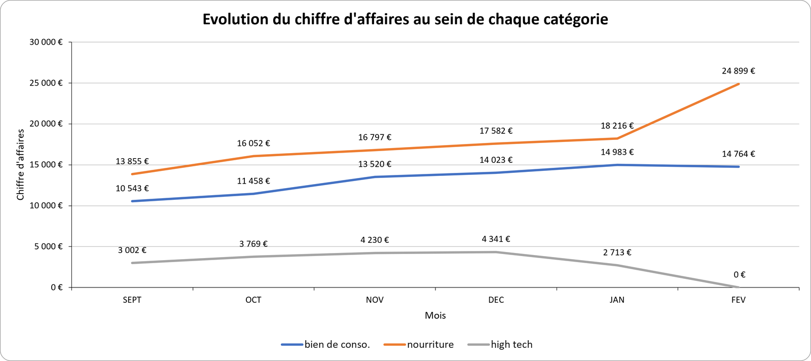

- Févr. 2020point de rupture identifié
- 3causes distinctes isolées
- 12mois d'historique disponibles
01 Contexte & besoin métier
Un e-commerçant qui constate une chute de son chiffre d'affaires souhaite identifier les raisons de cette baisse et anticiper l'évolution de la situation.
L'objectif est de décomposer cette baisse en facteurs sur lesquels l'entreprise peut agir. Elle peut venir d'une perte de trafic, d'une baisse de conversion, d'un panier moyen en recul, d'un changement de gamme, ou de plusieurs de ces facteurs à la fois.
02 Données
Un fichier Excel de clients affiliés couvrant douze mois, de mars 2019 à février 2020. Il contient les transactions, les catégories de produits, le trafic du site et le temps passé par visite.
Trois familles de produits : high-tech, biens de consommation et alimentaire.
Qualité et limites
- Douze mois seulement. C'est la limite majeure : sans année précédente, aucune saisonnalité ne peut être établie. Une baisse en février peut être structurelle ou parfaitement habituelle : les données ne permettent pas de trancher.
- Périmètre restreint aux clients affiliés, qui ne représentent pas nécessairement l'ensemble de la clientèle.
- Aucune donnée sur les visiteurs non acheteurs au-delà du volume de trafic : les causes d'abandon restent invisibles.
03 Démarche
-
Structurer avant d'analyser
Import et mise en forme du fichier, puis construction de tableaux croisés dynamiques croisant chiffre d'affaires, nombre de ventes et catégorie de produit par mois.
-
Localiser le point de rupture
Les courbes mensuelles de chiffre d'affaires, de trafic et de panier moyen situent la rupture en février 2020, après une progression continue.
Pourquoi dater précisément
Une baisse progressive et une rupture nette ne s'expliquent pas de la même façon. Une rupture datée oriente immédiatement l'enquête vers ce qui a changé à ce moment-là, plutôt que vers la recherche d'une cause progressive.
-
Décomposer le chiffre d'affaires par catégorie
Le chiffre d’affaires a été réparti par famille de produits afin de suivre l’évolution de chacune au fil du temps.
Pourquoi ne pas s'arrêter au total
Le total agrégé montre une baisse, sans en révéler la nature. La décomposition met au jour la disparition progressive de la catégorie high-tech, produit à prix unitaire élevé, et le basculement des ventes vers l'alimentaire, à prix unitaire faible.
Les ventes se sont reportées sur des produits moins chers : la baisse vient d'un changement de gamme.
-
Reconstruire un taux de conversion
Le trafic et le nombre de ventes ont été croisés mois par mois pour calculer un taux de conversion, indicateur absent du fichier source.
Pourquoi cet indicateur
Le trafic progressait fortement, les ventes beaucoup moins vite. En rapportant les ventes au trafic, on voit que le taux de conversion baisse : le site attirait plus de visiteurs, mais en transformait une part de plus en plus faible.
04 Résultats & impact
La baisse du chiffre d'affaires s'explique par trois mécanismes, qui demandent des réponses différentes.
| Mécanisme | Observation |
|---|---|
| Disparition du high-tech | La catégorie s'efface progressivement du catalogue |
| Effet mix produit | Bascule vers l'alimentaire, à prix unitaire plus faible |
| Baisse de conversion | Trafic en forte hausse, ventes en hausse plus lente |

Ce que cela change pour l'entreprise
Les deux premiers mécanismes sont liés : vendre de l'alimentaire à la place du high-tech fait baisser le chiffre d'affaires, même à volume constant. Il s'agit d'un choix d'assortiment plus que d'un problème commercial.
Le troisième est différent : le site attire de plus en plus de visiteurs, mais en convertit peu.
Recommandations
- Traiter la conversion en priorité. Simplifier le parcours d'achat : le trafic est déjà payé, chaque point de conversion gagné se convertit directement en chiffre d'affaires.
- Personnaliser les recommandations produit pour augmenter le panier moyen et compenser la baisse du prix unitaire liée au mix.
- Trancher explicitement sur le high-tech. Si la sortie de gamme est délibérée, la cible de chiffre d'affaires doit être révisée en conséquence ; si elle ne l'est pas, c'est un problème d'approvisionnement à traiter en amont.
- Ne pas piloter sur le chiffre d'affaires global seul. Suivre séparément volume, prix moyen et taux de conversion, faute de quoi les effets continueront de se masquer les uns les autres.
05 Limites & prochaines pistes
Douze mois ne permettent aucune conclusion saisonnière. Sans année de comparaison, il est impossible d'affirmer que février est un mois structurellement faible. C'est la principale limite de cette analyse.
Les causes de non-achat restent invisibles. On mesure que la conversion baisse, sans savoir à quelle étape les visiteurs abandonnent (recherche, fiche produit, panier ou paiement). Les recommandations sur le parcours restent donc des hypothèses à tester.
La corrélation entre temps passé et panier n'établit aucune causalité. Un visiteur qui reste longtemps achète peut-être davantage, mais il est tout aussi possible qu'il reste longtemps parce qu'il a l'intention d'acheter.
Prochaines pistes
- Conduire une analyse des non-achats pour transformer les hypothèses en diagnostic.
- Constituer un historique sur plusieurs années afin d'isoler la saisonnalité de la tendance.
- Industrialiser ce suivi mensuel dans un outil de BI : reconduire l'analyse manuellement chaque mois est coûteux et sujet à erreur.